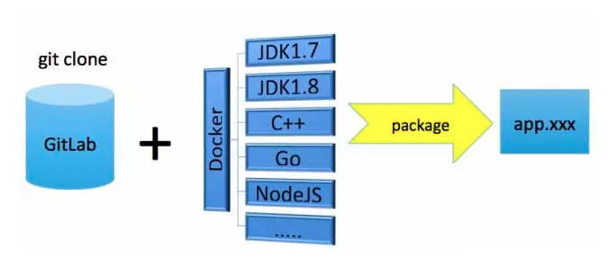

- 00 开篇词 带给你不一样的运维思考.md.html
- 01 为什么Netflix没有运维岗位？.md.html
- 02 微服务架构时代，运维体系建设为什么要以应用为核心？.md.html
- 03 标准化体系建设（上）：如何建立应用标准化体系和模型？.md.html
- 04 标准化体系建设（下）：如何建立基础架构标准化及服务化体系？.md.html
- 05 如何从生命周期的视角看待应用运维体系建设？.md.html
- 06 聊聊CMDB的前世今生.md.html
- 07 有了CMDB，为什么还需要应用配置管理？.md.html
- 08 如何在CMDB中落地应用的概念？.md.html
- 09 如何打造运维组织架构？.md.html
- 10 谷歌SRE运维模式解读.md.html
- 11 从谷歌CRE谈起，运维如何培养服务意识？.md.html
- 12 持续交付知易行难，想做成这事你要理解这几个关键点.md.html
- 13 持续交付的第一关键点：配置管理.md.html
- 14 如何做好持续交付中的多环境配置管理？.md.html
- 15 开发和测试争抢环境？是时候进行多环境建设了.md.html
- 16 线上环境建设，要扛得住真刀真枪的考验.md.html
- 17 人多力量大vs.两个披萨原则，聊聊持续交付中的流水线模式.md.html
- 18 持续交付流水线软件构建难吗？有哪些关键问题？.md.html
- 19 持续交付中流水线构建完成后就大功告成了吗？别忘了质量保障.md.html
- 20 做持续交付概念重要还是场景重要？看笨办法如何找到最佳方案.md.html
- 21 极端业务场景下，我们应该如何做好稳定性保障？.md.html
- 22 稳定性实践：容量规划之业务场景分析.md.html
- 23 稳定性实践：容量规划之压测系统建设.md.html
- 24 稳定性实践：限流降级.md.html
- 25 稳定性实践：开关和预案.md.html
- 26 稳定性实践：全链路跟踪系统，技术运营能力的体现.md.html
- 27 故障管理：谈谈我对故障的理解.md.html
- 28 故障管理：故障定级和定责.md.html
- 29 故障管理：鼓励做事，而不是处罚错误.md.html
- 30 故障管理：故障应急和故障复盘.md.html
- 31 唇亡齿寒，运维与安全.md.html
- 32 为什么蘑菇街会选择上云？是被动选择还是主动出击？.md.html
- 33 为什么混合云是未来云计算的主流形态？.md.html
- 35 以绝对优势立足：从CDN和云存储来聊聊云生态的崛起.md.html
- 36 量体裁衣方得最优解：聊聊页面静态化架构和二级CDN建设.md.html
- 37 云计算时代，我们所说的弹性伸缩，弹的到底是什么？.md.html
- 38 我是如何走上运维岗位的？.md.html
- 39 云计算和AI时代，运维应该如何做好转型？.md.html
- 40 运维需要懂产品和运营吗？.md.html
- 41 冷静下来想想，员工离职这事真能防得住吗？.md.html
- 42 树立个人品牌意识：从背景调查谈谈职业口碑的重要性.md.html
- 划重点：赵成的运维体系管理课精华（一）.md.html
- 划重点：赵成的运维体系管理课精华（三）.md.html
- 划重点：赵成的运维体系管理课精华（二）.md.html
- 新书 《进化：运维技术变革与实践探索》.md.html
- 特别放送 我的2019：收获，静静等待.md.html
- 结束语 学习的过程，多些耐心和脚踏实地.md.html
- 捐赠
18 持续交付流水线软件构建难吗？有哪些关键问题？
上期文章我们介绍了需求分解与应用对应的管理方式，以及提交环节的开发协作模式，今天我们详细介绍一下提交阶段的构建环节，也就是我们经常提到的代码的编译打包。
构建环节
由于静态语言从过程上要比动态语言复杂一些，代码提交后，对于Java和C++这样的静态语言，我们要进行代码编译和打包。而对于PHP和Python这样的动态语言，就不需要编译，直接打包即可。
同时，编译过程就开始要依赖多环境以及多环境下的配置管理，并根据不同的环境获取不同的配置，然后打包到最终的软件发布包中。
下面我就结合自己的实践经验，以Java为例，对构建环节做下介绍。
构建过程中我们要用到以下4种工具：
- Gitlab，代码管理工具，也是版本管理工具；
- Maven，依赖管理和自动化构建工具，业界同类型的工具还有Gradle等；
- Docker，用来提供一个干净独立的编译环境；
- 自动化脚本和平台，自动化构建的任务我们使用Python脚本来实现代码获取、编译执行、软件包生成等。
具体整个构建过程图示如下：

我们以Java为例描述如下。
1.首先准备好JDK的编译镜像，这个镜像环境与线上运行环境保持一致，比如OS版本、内核参数以及JDK版本等基础环境。当需要启动一个构建任务时，就创建一个对应的Docker实例，作为独立的编译环境。
2.构建任务会根据应用配置管理中的Git地址，将代码克隆下来放到指定的编译目录。Docker实例启动后，将编译目录挂载到Docker实例中。
3.执行mvn package命令进行编译打包，最终会生成一个可发布war的软件包。同样的，对于C++、Go、Node.js，也会准备好类似的编译镜像。不同的是，打包时，对于C++中的cmake和make，Go中的go install等等，最终也会生成一个可发布的软件包。
4.构建完成后，生成软件包放到指定构件库目录，或者直接发布到maven的构件库中管理，然后将Docker实例销毁。
上述就是一个完整的构建过程。在这里，你一定会有一些疑问，那么，我先回答几个比较常见的问题，欢迎你留言和我继续讨论。
几个关键问题
1.配置文件如何打包？
这个问题，我们在前面持续交付的多环境配置管理文章中，已经详细介绍过。这里我们结合构建过程，再介绍一下。
在上述第3个步骤中，我们要进行代码编译。按照持续交付理念，软件只需打包一次就可以各处运行，这对于代码编译是没有问题的，但是对于一些跟环境相关的配置就无法满足。
比如，我们前面讲到，不同的环境会涉及到不同的配置，如DB、缓存。而且，其他公共基础服务在不同环境中也会有不同的地址、域名或其他参数配置。
所以，我们就需要建立环境与配置之间的对应关系，并保存在配置管理平台中，至于如何来做，大家可以参考前面多环境配置管理的文章。
这里我们回到打包过程上来。
在做构建时，我们是可以确认这个软件包是要发布到哪个环境的。比如，按照流程，当前处于线下集成测试环境这个流程环节上，这时只要根据集成测试环境对应的配置项，生成配置文件，然后构建进软件包即可。如果是处于预发环境，那就生成预发环境对应的配置文件。
在我们的实际场景中，多个环境需要多次打包，这与我们持续交付中只构建一次的理念相悖。这并不是有意违背，而是对于Java构建出的交付件，最终无论生成的是war包，还是jar包，上述提到的跟环境相关的配置文件，是要在构建时就打入软件包中的。
而且在后续启动和运行阶段，我们是无法修改已经构建进软件包里的文件及其内容的。这样一来，配置文件无法独立发布，那么就必须跟软件包一起发布。所以，在实际场景下，我们要针对不同环境多次打包。
那么，我们如何确保多次打包的效果能够和“只构建一次”理念的效果相一致呢？
这就还是要依赖我们前面介绍的各个环节的建设过程，主要有以下3个方面：
- 代码提交。通过分支提交管理模式，每次构建都以master为基线，确保合入的代码是以线上运行代码为基础的。且前面的发布分支代码未上线之前，后续分支不允许进入线上发布环节，确保发布分支在多环境下是同一套代码。
- 编译环境统一。上述过程已经介绍，编译环境通过全新的Docker容器环境来保证。
- 配置管理。前面介绍到的多环境配置管理手段， 通过模板和auto-config的配置管理能力，确保多环境配置项和配置值统一管理。
至此，一个完整的软件构建过程就完成了。可以看到，如果充分完善前期的准备工作，在做后期的方案时就会顺畅很多。
2.为什么用Docker做编译环境的工具？
Docker容器很大的一个优势在于其创建和销毁的效率非常高，而且每次新拉起的实例都是全新的，消除了环境共用带来的交叉影响。而且对于并发打包的情况，Docker可以快速创建出多个并行的实例来提供编译环境，所以无论在效率上还是环境隔离上，都有非常好的支持。
你可以尝试一下我的这个建议，确实会非常方便。
3.为什么不直接生成Docker镜像做发布？
在使用Docker容器做编译的过程中，我们最终取得的交付件模式是一个war包，或者是一个jar包，这个也是我们后续发布的对象。
可能有读者会问：为什么不直接生成Docker镜像，后续直接发布镜像？
这确实是一个好问题。如果单纯从发布的维度来看，直接发布镜像会更方便，更高效。不过，在现实场景下，我们应该更全面地看问题。
早期我们曾有一段时间使用OpenStack+Docker的模式进行物理机的虚拟化，以提升资源利用率。这实际上是将容器虚拟机化。
也就是说，虽然Docker是一个容器，但是我们的使用方式仍然是虚拟机模式，要给它配置IP地址，要增加很多常用命令比如top、sar等等，定位问题需要ssh到容器内。
这里一方面是因为基于Docker的运维工具和手段没有跟上，当时也缺少Kubernetes这样优秀的编排工具；另一方面，我们之前所有的运维体系都是基于IP模式建设的，比如监控、发布、稳定性以及服务发现等等，完全容器化的模式是没有办法一步到位的。
所以，这里我们走了个小弯路：容器虚拟机化。那为什么我们不直接使用虚拟机，还能帮我们省去很多为了完善容器功能而做的开发工作？所以一段时间之后，我们还是回归到了KVM虚拟机使用方式上来。
这样也就有了上述我们基于虚拟机，或者更准确地说，是基于IP管理模式下的持续交付体系。
经过这样一个完整的持续交付体系过程后，我们总结出一个规律：
容器也好，虚拟机也罢，这些都是工具，只不过最终交付模式不一样。但是前面我们所讲的不管是标准化、多环境、配置管理等等这些基础工作，无论用不用容器都要去做。而且，容器的高效使用，一定是建立在更加完善和高度标准化的体系之上，否则工具只会是越用越乱。
关于持续交付流水线软件构建方面的内容，我们今天先分享到这里，欢迎你留言与我讨论。
如果今天的内容对你有帮助，也欢迎你分享给身边的朋友，我们下期见！
© 2019 - 2023 Liangliang Lee. Powered by gin and hexo-theme-book.